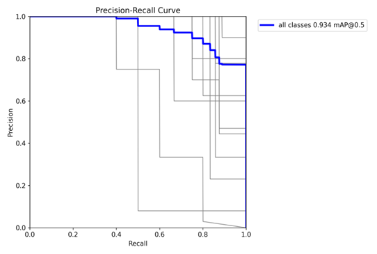
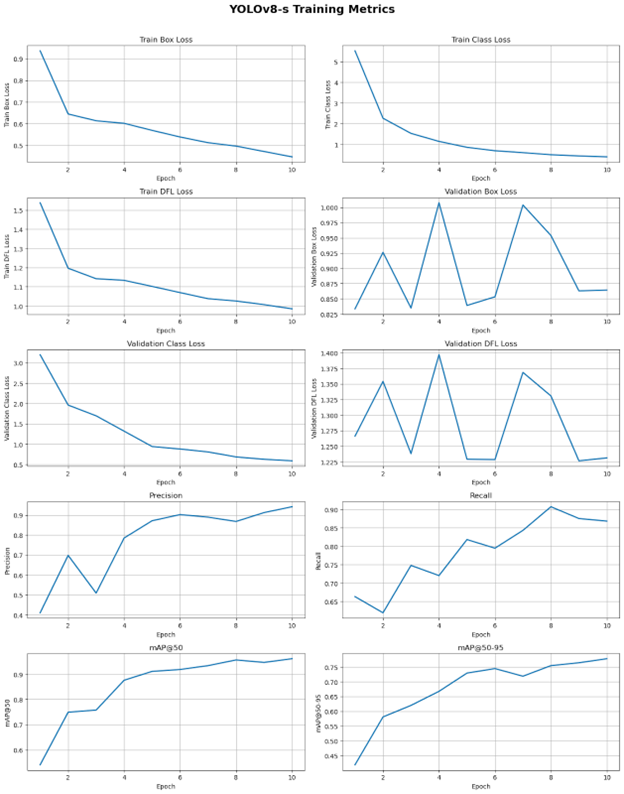
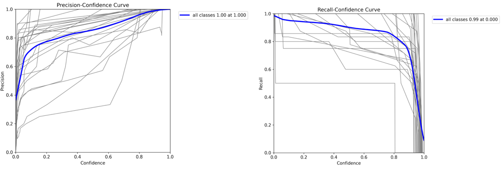

Automated ASL Fingerspelling Recognition for Educational Platforms Using YOLOv8 Frame Classification and Letter Sequence Reconstruction#
Authors: Usher Raymond Abainza, Dane Casey Casino, Kein Jake Culanggo, and Karylle dela Cruz
Abstract. Automated recognition of American Sign Language (ASL) fingerspelling is critical for educational platforms aiming to provide learners with timely feedback on sequence production. Despite advances in isolated letter classification, existing systems often fail to evaluate continuous fingerspelling, limiting pedagogical utility. This study proposes an integrated framework combining YOLOv8-based convolutional neural networks for frame-level letter recognition with a post-processing procedure that reconstructs coherent letter sequences from pre-recorded videos. Lightweight YOLOv8 variants, Nano (YOLOv8-n) and Small (YOLOv8-s), were trained on static handshape datasets and applied to words with varying handshape complexity. Performance was evaluated using Character Accuracy, Character Error Rate, Word Error Rate, and Subsequence Accuracy. Results indicate that both models achieve high accuracy on sequences with distinct handshapes, and that YOLOv8-s consistently performed slightly better than YOLOv8-n in classification and sequence reconstruction. Challenges arise with similar fist-based letters where misclassifications are compounded by rapid transitions, partial occlusion, and subtle finger variations. Grad-CAM analysis confirms that both models primarily attend to general hand regions rather than fine-grained finger positions. The system demonstrates that combining real-time hand detection with temporal reconstruction enables automated assessment of continuous fingerspelling, addressing gaps in active learning and feedback provision. Findings suggest that targeted improvements in model architecture, dataset diversity, and post-processing could enhance recognition of complex sequences. This framework provides a foundation for computationally efficient educational tools capable of delivering formative feedback to learners of ASL fingerspelling.
Keywords: American Sign Language, fingerspelling recognition, YOLOv8, convolutional neural networks, video sequence reconstruction, educational technology, gesture recognition, character accuracy
1 Introduction#
1.1 Background
American Sign Language (ASL) constitutes a fully expressive visual language, integrating hand gestures, facial expressions, and body movements to convey meaning. While primarily used by Deaf and Hard-of-Hearing (DHH) individuals, ASL has gained increasing attention among non-signers seeking practical communication skills. Its prominence as a second language has grown substantially; according to the Modern Language Association, ASL ranks as the third most-studied modern or foreign language at U.S. universities [1], reflecting considerable interest among hearing learners. Moreover, research demonstrates that acquiring ASL does not hinder the development of spoken English, underscoring its viability as a linguistically safe learning option [2]. Among the foundational components of ASL, fingerspelling, the sequential representation of letters, plays a critical role in conveying proper nouns, technical terminology, and less common words. Mastery of fingerspelling requires not only recognition of individual handshapes but also the ability to produce and sequence them accurately to form meaningful words and numerical expressions.
Despite its importance, traditional educational approaches for teaching fingerspelling, including static illustrations, printed charts, and multiple-choice exercises, primarily assess recognition of isolated letters. These methods provide limited insight into a learner’s capacity to construct sequences accurately and often fail to capture prevalent challenges, such as inconsistent hand positioning, timing errors between consecutive letters, and the translation of visual recognition into motor execution. In contrast, research in language acquisition highlights that active production, rather than passive recognition, significantly enhances retention, comprehension, and the transfer of knowledge to practical contexts [3].
Perceptual-motor processes are also integral to effective ASL learning. Martinez and Singleton (2018) demonstrated that movement short-term memory and visuospatial short-term memory jointly predict the proficiency with which hearing non-signers acquire signs, emphasizing the necessity of practicing actual hand movements rather than relying solely on visual recognition [4]. These findings indicate that educational systems capable of delivering immediate feedback on free-form fingerspelling attempts would address a critical pedagogical gap, particularly for learners engaged in remote or application-based instruction, by supporting skill development beyond rote memorization and multiple-choice evaluation.
Traditional computer vision techniques frequently encounter limitations due to variability in hand shapes across signers, which impedes accurate classification of fingerspelled letters [5]. Recent work has demonstrated that one-stage object detectors can reliably recognize alphabet-level hand gestures by jointly localizing hands and predicting classes within a single pass. For example, Poornima et al. (2024) applied a YOLOv5-based system specifically to ASL alphabet letters, achieving high accuracy and efficient detection, while Hasan et al. (2025) implemented a customized YOLOv8 approach, demonstrating real-time performance and robust classification for sign language recognition [6,7]. These studies establish YOLO-family models as viable and efficient alternatives to traditional CNN-based classifiers for alphabet-level sign recognition.
Building on these capabilities, recent studies have explored lightweight and optimized YOLOv8 variants for real-time ASL recognition tasks. Alsharif et al. (2024) applied transfer learning with YOLOv8 for real-time ASL alphabet recognition, achieving high precision (98%), recall (98%), F1 score (99%), and mean average precision (mAP) of 98%, highlighting the potential of YOLOv8 for rapid educational feedback [8]. Jia and Li (2023) proposed SLR-YOLO, an improved YOLOv8 network with a lighter backbone and enhanced feature fusion, achieving 90.6% and 98.5% accuracy on ASL and Bengali sign datasets, respectively [9]. Che et al. (2025) developed SFG-YOLOv8, an efficient gesture keypoint detector, showing mAP improvements for small-feature gestures with high inference speed, suitable for low-power augmented reality applications [10]. Alaftekin et al. (2024) demonstrated a YOLOv4-CSP-based real-time recognition system for Turkish sign language, achieving 98.95% precision, 98.15% recall, and 99.49% mAP, further confirming YOLO’s applicability across languages and datasets [11]. Collectively, these studies support the selection of YOLOv8-n (Nano) as a lightweight baseline for computational efficiency and YOLOv8-s (Small) for improved classification performance, balancing speed, accuracy, and resource requirements for educational platforms.
Together, these findings establish the potential of YOLO-based recognition and real-time hand tracking to provide immediate feedback on spelling accuracy and sequence formation, even when limited to alphabet and numerical recognition. While such frameworks do not interpret facial expressions, grammatical context, or full ASL comprehension, they represent a meaningful advancement in supporting literacy in fingerspelling and structured skill development for non-signers, particularly in remote or application-based learning environments.
1.1.1 Problem Gap
Although existing ASL recognition research demonstrates highly accurate classification of isolated handshapes, there remains a lack of systems capable of evaluating a learner’s production of continuous fingerspelling sequences. Current educational materials and automated systems primarily focus on recognition of single images rather than full sequences, limiting their usefulness for instructional platforms that monitor progress across multiple letters. There is a clear gap in accessible tools able to analyze free-form, pre-recorded fingerspelling attempts and transform frame-level predictions into coherent letter sequences suitable for feedback and assessment. While one-stage object detectors such as YOLO have demonstrated efficacy for single-letter recognition, few studies integrate sequence reconstruction with temporal smoothing to address variations in gesture timing.
1.1.2 System Justification
The proposed system addresses this gap by combining a YOLO-based CNN recognition model with a post-processing procedure that reconstructs letter sequences from continuous video frames. Lightweight variants of YOLO, including YOLOv8-n (Nano) and YOLOv8-s (Small), provide robust frame-level classification while minimizing computational overhead. Temporal smoothing and repetition-collapsing techniques compensate for inconsistencies in gesture execution, enabling accurate sequence reconstruction. This design aligns with pedagogical needs for evaluating active production, as highlighted in prior research on perceptual-motor processes and retention [3, 4], and facilitates the development of educational applications that provide meaningful feedback beyond isolated recognition tasks.
1.1.3 Scope and Limitations
The system focuses exclusively on the ASL manual alphabet and numerical handshapes. Dynamic signs, facial expressions, grammatical structures, and full-sentence interpretation are outside the scope. Only offline processing of pre-recorded videos is considered, with real-time deployment reserved for future work. The model is trained on publicly available datasets of static handshapes and evaluated using learner-submitted videos. It assumes clear visibility of the hands and does not incorporate signer-specific calibration, limiting its current applicability to well-lit, unobstructed recordings.
1.1.4 Expected Contribution
This study contributes an integrated framework for automated fingerspelling assessment comprising (1) a YOLO-based CNN model for accurate letter recognition, (2) a frame-level inference procedure for video-based evaluation, and (3) a reconstruction method capable of generating coherent letter sequences. By leveraging lightweight YOLO variants optimized for accuracy and speed, the framework enables educational platforms to provide formative feedback for learners practicing continuous fingerspelling. The approach addresses the limitations of prior single-image recognition systems while remaining computationally accessible for offline instructional use.
1.2 Objectives
The primary objective of this study is to develop an automated ASL fingerspelling recognition system suitable for educational platforms. The system will be trained on image-based datasets of ASL alphabet handshapes and evaluated using pre-recorded fingerspelling videos. Offline processing is the focus, while real-time recognition is reserved for future work. To achieve this, the study pursues the following specific objectives:
Train a YOLOv8 Model for ASL Letter Recognition. Develop and train lightweight YOLOv8 variants, including YOLOv8-n (Nano) and YOLOv8-s (Small), to classify individual ASL fingerspelled letters from static images. These models balance computational efficiency and recognition accuracy, enabling robust classification across varied handshapes and lighting conditions.
Apply the Model to Pre-Recorded Video Inputs. Implement a video-processing pipeline that extracts frames from pre-recorded videos and applies the trained YOLOv8 model to generate frame-level predictions, supporting sequential evaluation of continuous fingerspelling attempts.
Reconstruct Letter Sequences From Frame Predictions. Design a post-processing procedure to convert per-frame predictions into coherent letter sequences, incorporating temporal smoothing, removal of transitional frames, and collapsing repeated predictions to produce accurate spellings of words.
Evaluate Model Performance and Identify the Optimal YOLO Variant. Assess the classification performance on the image dataset using mAP50-95, precision, and recall. For the pre-recorded video datasets, evaluate character accuracy, character error rate, word error rate, and subsequence accuracy. Compare the results of YOLOv8-n and YOLOv8-s to identify which variant offers the best balance of accuracy, inference speed, and computational efficiency for educational applications.
2 Data Collection and Preprocessing#
2.1 Data Collection
Image Dataset. The dataset used in this study is the American Sign Language Letters dataset, an object detection dataset containing images of each ASL letter annotated with bounding boxes. Curated by David Lee, a data scientist specializing in accessibility, the dataset is publicly available and designed to support the development of computer vision models capable of interpreting ASL letters. Hosted on the Roboflow platform, the dataset allows for easy integration into YOLOv8-compatible pipelines and supports additional preprocessing and augmentation to improve model generalization. Each image contains one or more instances of ASL letters labeled with bounding boxes that define the spatial location of each sign, enabling models to learn both classification and localization. The dataset’s structure and flexibility make it particularly suitable for educational platforms, as it allows the creation of models that can accurately detect letters across varied hand positions, orientations, and backgrounds, bridging the gap between static recognition and real-world application scenarios.

Fig. 1. Random sample images from the American Sign Language (ASL) Dataset with their corresponding labels
Video Dataset. In addition to the static image dataset, we will create a custom video dataset to evaluate the system’s ability to recognize continuous ASL fingerspelling sequences. Each video will be recorded in 16:9 landscape orientation to maintain uniformity across all participants and recordings, with a plain white background, optimal and consistent lighting, and a fixed camera position. The framing will focus exclusively on the hand performing gestures, excluding the arm and other body parts, ensuring that only relevant gesture information is captured. Four researchers will participate, each producing short videos (approximately 5–10 seconds) spelling out 10-word sequences in ASL letters. Altogether, the dataset is expected to yield around 40 videos, covering all letters in the ASL alphabet for comprehensive testing.
These controlled recording conditions are guided by prior research demonstrating the importance of environmental factors in gesture recognition. Hand gesture recognition systems are highly sensitive to illumination, and inconsistent lighting can substantially reduce accuracy. By ensuring uniform and optimal lighting, our recordings mitigate this source of error, as highlighted in studies emphasizing the impact of diverse illumination conditions on hand recognition performance [12].
Similarly, background complexity is a known challenge in vision-based gesture recognition. Cluttered or patterned backgrounds can interfere with hand detection and classification, increasing misclassification rates. Using a plain white background addresses this challenge and ensures that model errors primarily reflect recognition capability rather than environmental distractions [13].
The exclusion of extraneous body parts and focusing solely on the hand aligns with findings that occlusion and irrelevant visual features can reduce the reliability of gesture detection models. By limiting the frame to the hand itself, our dataset minimizes potential occlusion and ensures that feature extraction is concentrated on the relevant gestures [14].
Finally, stable camera positioning contributes to maintaining uniformity in frame composition, reducing errors that arise from unintended rotation, scaling, or shifting of the hand in the frame. Together, these carefully controlled settings enhance the efficiency, robustness, and repeatability of the testing process, allowing reliable evaluation of sequence reconstruction and overall system performance [15].
To clarify the role of the video dataset within the overall study, it was designed with two primary objectives:
Assess real-world applicability: Evaluate the system’s capacity to interpret continuous fingerspelling sequences rather than isolated static images.
Examine temporal consistency: Measure how accurately the model maintains recognition performance across varied hand motions, speeds, and transitions between gestures.
By integrating the static image dataset with this custom video dataset, the study establishes a more comprehensive evaluation framework. This combination ensures that the system is tested not only for per-frame classification accuracy but also for its ability to reconstruct coherent letter sequences in dynamic, realistic settings, thereby supporting a robust assessment of both recognition and sequence reconstruction capabilities.
2.2 Data Preprocessing
2.2.1 Image Dataset Preparation for Model Training and Testing
To enhance the robustness and generalization capability of the model, extensive data augmentation was applied to the training set. For each original image in the training set, three augmented versions were generated, effectively quadrupling the size of the training data. This augmentation strategy exposes the model to diverse conditions and viewing angles that it may encounter in real-world scenarios, reducing overfitting and improving the model’s ability to generalize across unseen samples.
The following augmentation techniques were randomly applied to training images:
Geometric Transformations:
Horizontal Flip: Images were randomly flipped horizontally to introduce mirror variations of hand positions, helping the model recognize letters regardless of dominant hand orientation.
Random Crop: Applied with 0% minimum zoom and 20% maximum zoom to simulate variations in camera distance and framing, ensuring the model can handle different spatial contexts within the frame.
Rotation: Random rotation between -5° and +5° was applied to account for minor deviations in hand orientation during recording, reflecting realistic signing conditions.
Shear: Horizontal and vertical shear transformations of ±5° were introduced to simulate perspective distortions that may occur when the camera is not perfectly aligned.
Appearance Modifications:
Grayscale Conversion: Applied to 10% of images to reduce the model’s reliance on color information, improving generalization across different skin tones and lighting conditions.
Brightness Adjustment: Random brightness variations between -25% and +25% simulate different lighting environments, ensuring the model remains accurate under low-light or overexposed conditions.
Blur: Gaussian blur up to 1.25 pixels accounts for motion blur and slight camera focus variations, mimicking natural movement during signing.
These augmentation parameters were carefully selected to maintain the recognizability of ASL letters while introducing realistic variations. By combining geometric and appearance-based augmentations, the trained YOLOv8 models (YOLOv8n and YOLOv8s) are better equipped to generalize across diverse real-world conditions, including fluctuating lighting, camera angles, hand orientations, and environmental contexts. This ensures that the system remains reliable and accurate when applied to both controlled and dynamic video datasets.
2.2.2 Video Dataset Preparation for Testing
To evaluate the trained YOLOv8 models on realistic ASL fingerspelling sequences, a preprocessing pipeline was developed to handle video input and prepare frames for inference. Video data collected from mobile devices and cameras often contains orientation metadata and other inconsistencies that, if unaddressed, can reduce detection accuracy. This pipeline ensures that each frame is correctly oriented and maintains its original quality, allowing the model to perform reliably under varied recording conditions.
Video Input Handling. Video files are loaded using OpenCV’s VideoCapture interface, which extracts essential video properties including frame dimensions (width and height), frame rate (frames per second), and metadata tags. Maintaining these original properties ensures the model receives high-quality inputs and avoids distortions or unintended scaling that could affect hand detection and classification.
Rotation Correction. Mobile devices often store video rotation as metadata rather than physically rotating the pixels, causing frames to appear misaligned when read by standard libraries. Misoriented frames can significantly reduce gesture recognition performance because YOLO-based models are sensitive to spatial orientation. To address this, the preprocessing pipeline automatically corrects frame orientation through the following steps:
Metadata Extraction. The video’s rotation metadata is read using OpenCV’s CAP_PROP_ORIENTATION_META property, which indicates the intended viewing orientation (0°, 90°, 180°, or 270°). This ensures that each frame is interpreted according to the device’s intended orientation.
Frame Rotation. Based on the extracted rotation value, frames are rotated appropriately before inference:
90° rotation: rotated 90° clockwise (cv2.ROTATE_90_CLOCKWISE)
180° rotation: rotated 180° (cv2.ROTATE_180)
270° rotation: rotated 90° counterclockwise (cv2.ROTATE_90_COUNTERCLOCKWISE)
0° or no metadata: frames are processed without rotation
This step guarantees that hand gestures are consistently aligned across frames, reducing errors caused by unintentional rotation or orientation mismatches.
By maintaining consistent orientation, preserving video quality, and standardizing frame dimensions, the preprocessing pipeline ensures that the YOLOv8 models can focus on learning hand features rather than compensating for recording inconsistencies. Combined with the augmented image dataset, this video preprocessing strategy contributes to robust model evaluation on continuous ASL fingerspelling sequences.
def rotate_frame(frame, rotation):
"""Rotate frame based on rotation angle."""
if rotation == 90:
return cv2.rotate(frame, cv2.ROTATE_90_CLOCKWISE)
elif rotation == 180:
return cv2.rotate(frame, cv2.ROTATE_180)
elif rotation == 270:
return cv2.rotate(frame, cv2.ROTATE_90_COUNTERCLOCKWISE)
else:
return frame
Dimension Adjustment. For videos rotated by 90° or 270°, the output video dimensions are automatically swapped (width ↔ height) to preserve the correct aspect ratio. This ensures that the rotated frames are displayed accurately without distortion, maintaining the spatial integrity of hand gestures for model inference.
Processing Pipeline. The complete video preprocessing and inference pipeline operates as follows:
Video Loading. The input video file is opened, and metadata is extracted to determine properties such as frame dimensions, frame rate, and rotation information.
Rotation Detection. Orientation metadata is analyzed to identify the required rotation correction.
Output Configuration. The output video writer is initialized with corrected frame dimensions and the original frame rate, ensuring consistency between input and output videos.
Frame-by-Frame Processing. Each frame is sequentially:
Read from the input video
Rotated according to the metadata if necessary
Passed to the YOLOv8 model for inference
Annotated with detection results
Written to the output video file
Resource Cleanup. Video capture and writer objects are properly released to prevent memory leaks and ensure system stability.
This preprocessing pipeline guarantees that the YOLOv8 models receive consistently oriented frames with accurate dimensions and frame rates, allowing reliable recognition of ASL letters regardless of the original capture conditions. By automating rotation correction, aspect ratio adjustment, and frame processing, the pipeline reduces errors caused by device-specific recording inconsistencies and ensures that performance metrics reflect the model’s actual recognition capability rather than environmental artifacts.
3 Model Design and Initial Experiments#
3.1 Model Design
3.1.1 Model Architecture
This study adopts two variants of YOLOv8 (You Only Look Once version 8), namely the “Nano” (YOLOv8‑n) and “Small” (YOLOv8‑s) configurations, as the core architecture for ASL fingerspelling recognition. YOLOv8 constitutes a contemporary generation of one‑stage object detectors, designed to unify detection, both localization and classification, in a single pass while maintaining efficiency suitable for deployment beyond high‑end GPUs. Unlike legacy CNN classifiers trained for image-level recognition, the YOLO paradigm directly predicts bounding boxes and class scores, enabling detection of hand gestures in diverse contexts and supporting real‑time or near‑real‑time inference. The motivation to revisit YOLO, after initial experiments with classification-based CNNs, stems from the need to support continuous fingerspelling detection across video frames, where spatial localization and temporal consistency are critical.
YOLOv8 itself advances the YOLO lineage by adopting an anchor‑free, decoupled detection head architecture and replacing earlier backbone modules (such as C3) with more efficient constructs (e.g., C2f), thereby improving gradient flow and feature representation while reducing computational overhead. This architectural refinement supports more robust detection of small or irregular objects, a desirable property when the target is a human hand performing subtle sign language gestures [16].
Two model scales were selected to systematically examine the trade‑off between resource demand and detection performance:
YOLOv8‑n (Nano): The most lightweight variant of YOLOv8, parametrized to minimize memory footprint and computational complexity. According to YOLOv8 documentation, this variant has roughly 3.2 million parameters and requires on the order of 8.7 GFLOPs for inference at 640 × 640 resolution. Its inference latency on GPU (e.g., with TensorRT on a T4) can be as low as ~1.47 ms per image, making it especially suitable for edge devices, embedded systems, or real-time applications where latency and efficiency are prioritized [16]. The Nano variant’s compactness makes it an appropriate baseline for deployment in resource-constrained environments, for example, mobile learning apps or educational platforms where hardware may be limited.
YOLOv8‑s (Small): A moderately-sized variant that increases model capacity compared to Nano, typically offering a larger backbone and more feature channels. At 640 × 640 input resolution, YOLOv8‑s demands more computation (e.g., significantly more FLOPs and parameters than Nano) but yields higher detection quality in many contexts. According to benchmark results on standard detection datasets like COCO, YOLOv8‑s achieves higher mean Average Precision (mAP) than the Nano version, reflecting its superior capability to detect smaller, more subtle, or occluded objects under varied conditions [16], [17]. In the context of ASL handshape detection, this increased capacity may translate to better discrimination among visually similar hand configurations and improved robustness against noise such as lighting variation, minor occlusions, or variable hand orientation.
Both variants share the core YOLOv8 architecture, which is structured in three functional modules: a backbone for hierarchical feature extraction, a neck that performs multi-scale feature aggregation to enhance detection robustness across different object sizes, and a detection head that outputs bounding box coordinates, objectness/confidence scores, and class probabilities. The anchor-free and decoupled head design simplifies detection and reduces hyperparameter tuning compared to earlier YOLO versions, facilitating adaptation to custom, domain-specific tasks such as ASL letter detection [16]. Adopting the pretrained weights released by the developers of YOLOv8, originally trained on generic object detection datasets such as COCO, enables transfer learning. This initialization leverages learned representations for general object features, which are then fine-tuned to capture the unique spatial and structural patterns characteristic of human handshapes in ASL, accelerating convergence and improving generalization while reducing the need for extremely large ASL-specific training datasets.
Selecting YOLOv8-n and YOLOv8-s constitutes a deliberate design choice grounded in balancing computational resource constraints, deployment feasibility, and recognition performance. Comparing Nano and Small allows for an evidence-based evaluation of whether a lightweight model suffices for accurate fingerspelling detection or whether the added complexity of a larger model provides meaningful gains in classification reliability, especially under the variable conditions typical of user-submitted videos such as lighting variation, hand orientation, and motion blur.
3.1.2 Training Configuration
Both YOLOv8 variants were trained under identical conditions to ensure a fair comparison and to isolate the impact of model scale on ASL fingerspelling recognition performance. The training setup was carefully designed to balance model accuracy, computational efficiency, and convergence stability, while simultaneously minimizing the risk of overfitting on the relatively limited ASL dataset. The models were trained using the Ultralytics YOLOv8 framework, which integrates data loading, loss computation, weight optimization, and augmentation procedures in a seamless pipeline, allowing for efficient experimentation and reproducibility. The training call was structured as follows:
model.train(
data="data/data.yaml",
epochs=10,
imgsz=640,
batch=16,
name="model_name"
)
Training Hyperparameters. To ensure both YOLOv8 variants are evaluated under consistent conditions, the models were trained using carefully selected hyperparameters that balance convergence speed, detection accuracy, and computational efficiency. The following table summarizes the key training settings and their relevance to ASL fingerspelling recognition.
Hyperparameter |
Value |
Relevance to ASL Detection |
|---|---|---|
Epochs |
10 |
Provides sufficient iterations for model convergence while avoiding overfitting on ASL data. |
Input Resolution |
640 × 640 pixels |
Balances fine-grained handshape detail capture with computational efficiency for real-time processing. |
Batch Size |
16 images per batch |
Ensures stable gradient updates and efficient GPU utilization without exceeding memory limits. |
Optimizer |
AdamW with automatic LR scheduling |
Adapts learning rate during training to maintain smooth convergence and reduce oscillations in the loss. |
Data Configuration |
Defined in data.yaml with training/validation splits and class definitions |
Guarantees systematic evaluation and proper class coverage for all ASL letters. |
Table 1. Training Hyperparameters for YOLOv8 Variants in ASL Letter Detection
Transfer Learning Strategy. Both YOLOv8 variants were initialized with the official pretrained weights provided by Ultralytics (yolov8n.pt and yolov8s.pt), which were originally trained on the COCO dataset containing 80 object categories. Leveraging these pretrained weights allows the models to inherit generalized feature extraction capabilities, such as edge, texture, and shape detection, that are transferable across domains. In the context of ASL fingerspelling recognition, this transfer learning approach is particularly beneficial because hand shapes exhibit structural patterns that can be efficiently recognized by features learned from generic object datasets. Fine-tuning on the ASL dataset enables the models to specialize these generalized features for precise localization and classification of hand gestures, improving convergence speed and final detection performance compared to training from random initialization, which would require substantially more data and computational effort.
Training Procedure. Training was conducted using the Ultralytics YOLOv8 framework, which manages data loading, augmentation, loss computation, and weight optimization in an integrated pipeline. During training, data augmentation strategies described in the Data Preprocessing section were applied dynamically, producing diverse samples that improve the model’s robustness to variations in hand orientation, lighting, and partial occlusions, which are common challenges in real-world ASL video streams.
Model Identification. The trained models were saved with distinct identifiers to ensure clarity and reproducibility during subsequent evaluation. Each identifier reflects the model’s configuration and its intended role in the comparative analysis:
YOLOv8-n (Nano) model: Saved as yolo8n_baseline to denote the lightweight Nano configuration. This model serves as the baseline for performance assessment, representing a resource-efficient option suitable for deployment in real-time or mobile applications. Its compact size allows for rapid inference while providing sufficient accuracy for initial evaluation of ASL letter recognition.
YOLOv8-s (Small) model: Saved as yolo_model to represent the Small configuration, which has greater model capacity and feature extraction capability. This identifier facilitates direct comparison against the Nano baseline to determine whether the additional computational cost translates to meaningful improvements in detection accuracy, especially under challenging conditions such as varied lighting, partial hand occlusion, or subtle differences between similar hand shapes.
This structured approach enables a systematic assessment of the trade-off between model efficiency and detection performance. By maintaining distinct identifiers, experiments can clearly track how each model behaves under identical training and evaluation conditions, providing evidence-based insights into whether the higher-capacity YOLOv8s is justified for real-world ASL fingerspelling applications.
3.2 Initial Experiments
3.2.1 YOLOv8-n (Nano). To evaluate the effectiveness of the lightweight YOLOv8‑n configuration for ASL fingerspelling detection, the model was trained for 10 epochs under the experimental conditions described previously. Performance was assessed using standard object detection metrics, including mean Average Precision at IoU thresholds 0.5 to 0.95 (mAP50-95), precision, and recall. These metrics provide a comprehensive view of the model’s ability to correctly detect and classify hand gestures while minimizing false positives and false negatives. The following results summarize the model’s best performance during the training process.

Figure 2. YOLOv8-n (Nano) Training Metrics
Training Duration |
Best Epoch |
Best mAP50-95 |
Best Precision |
Best Recall |
|---|---|---|---|---|
1.326 hours |
10.0 |
0.76236 |
0.86954 |
0.86505 |
Table 2. YOLOv8-n (Nano)Training Performance Metrics
Training Progress and Loss Analysis. The YOLOv8‑n model completed training in 1.326 hours, converging at epoch 10. Analysis of the training losses indicates robust learning behavior. The Train Box Loss declined smoothly from approximately 0.85 to 0.5, reflecting steady improvement in the model’s ability to predict bounding box coordinates. This is particularly relevant for ASL fingerspelling recognition, as precise hand localization is essential to distinguish subtle differences between similar handshapes. The Train Class Loss began at 4.6 and decreased consistently to around 1.0, demonstrating that the model is effectively learning to differentiate the 26 ASL letters despite visual similarities between certain gestures. The Train Distribution Focal Loss (DFL), designed to capture probabilistic bounding box placement, decreased from 1.5 to approximately 1.0, signaling growing confidence in localizing hands even under variable scales and orientations. Overall, the smooth decline across all training losses suggests stable optimization and effective convergence tailored to the ASL detection task.
Validation Performance and Generalization. Validation metrics reveal the model’s ability to generalize to unseen examples. The Validation Box Loss exhibited high volatility between 0.825 and 1.0, indicating difficulty in consistently locating hands under challenging conditions such as partial occlusions, motion blur, or diverse background contexts. Conversely, the Validation Class Loss steadily decreased from 4.5 to just below 2.0, highlighting that the model generalizes well in classifying handshapes despite the inherent visual ambiguity of certain letters. The Validation DFL Loss mirrored the oscillations of the box loss, further emphasizing that precise localization remains a challenge on validation data. These observations underscore that while YOLOv8‑n can reliably identify which handshape is present, achieving exact bounding box placement for all frames is more difficult under realistic variations.
Detection Metrics. Evaluation of detection performance reinforces this nuanced pattern. Precision increased rapidly and stabilized between 0.8 and 0.85, showing that most predicted detections corresponded correctly to actual hand positions. Recall initially dropped from near 0.95 to approximately 0.5, likely due to the model predicting many false positives in early epochs, but recovered to stabilize between 0.85 and 0.9, reflecting improved sensitivity in identifying all true instances of hand gestures. The mAP@50 metric reached approximately 0.9, demonstrating strong detection performance under a moderate overlap requirement. However, the stricter mAP@50‑95 averaged just above 0.7, revealing limitations in fine-grained localization accuracy. For ASL recognition, this gap highlights that while the model can roughly locate hands and classify them correctly, subtle misalignments in bounding boxes could lead to occasional misclassification between visually similar letters, particularly in dynamic video frames.
Summary and Interpretation. In summary, YOLOv8‑n demonstrates strong classification and overall detection capabilities, with high Precision, Recall, and mAP@50. The primary limitation lies in precise localization, as evidenced by the volatility in Validation Box and DFL losses and the difference between mAP@50 and mAP@50‑95. For the ASL fingerspelling task, this indicates that while the model is well-suited for real-time recognition of hand gestures and can reliably classify letters in most scenarios, additional measures—such as targeted data augmentation, fine-tuning on challenging hand orientations, or integrating temporal smoothing across video frames—may be necessary to improve bounding box precision and minimize subtle classification errors.

Figure 3. YOLOv8-n (Nano) Precision–Confidence and Recall–Confidence curves
These curves illustrate how model output confidence relates to class decision quality. Precision–Confidence describes how the proportion of correct positive detections changes as the confidence threshold increases, while Recall–Confidence measures how many true positives are retained. The combined interpretation shows the trade off between strict filtering and overall detection coverage. The optimal operating region is typically identified where both curves remain stable before one begins to decline, indicating a suitable confidence threshold for deployment.

Figure 4. YOLOv8-n (Nano) Precision–Recall curve
The precision–recall curve presents a ranking quality view of detections independent of a fixed confidence cutoff. The shape of this curve indicates performance across varying thresholds and is directly tied to mean average precision. High precision maintained over a broad range of recall values indicates strong discriminative capability and reliable positive identification within the dataset.

Figure 5. YOLOv8-n (Nano) F1-Confidence Curve
The F1–Confidence curve identifies a point where precision and recall achieve the highest balanced performance. The peak of this curve provides a recommended confidence threshold that optimizes harmonic mean performance and can serve as a practical default setting for real application use.
3.2.2 YOLOv8-s (Small). To examine the performance gains associated with a larger model capacity, the YOLOv8-s configuration was likewise trained for 10 epochs under the same experimental conditions. Model performance was evaluated using mean Average Precision at IoU thresholds 0.5 to 0.95 (mAP50-95), precision, and recall, which together measure overall detection quality, localization accuracy, and error sensitivity. In contrast to the nano variant, the small architecture is expected to offer improved feature extraction and generalization capabilities. The following results summarize the model’s best performance during the training process.

Figure 6. YOLOv8-s (Small) Training Metrics
Training Duration |
Best Epoch |
Best mAP50-95 |
Best Precision |
Best Recall |
|---|---|---|---|---|
3.168 hours |
10.0 |
0.77813 |
0.94178 |
0.86841 |
Table 3. YOLOv8-s (Small) Training Performance Metrics
Training Progress and Loss Analysis. Analysis of the YOLOv8-s training losses indicates stable convergence over 10 epochs. The Train Box Loss declined from values above 0.9 to approximately 0.45, reflecting consistent improvement in bounding box localization. The Train Class Loss began above 5.0 and decreased smoothly to below 0.5, demonstrating that the model rapidly acquired discriminative features for object classification. The Train Distribution Focal Loss (DFL) decreased from roughly 1.55 to 1.0, signaling increasing confidence in precise localization predictions. The smooth downward behavior of all three training loss curves suggests that the optimization process proceeded in a stable manner and that the model effectively learned spatial and categorical relationships present in the training dataset.
Validation Performance and Generalization. Performance on the validation set reveals a more uneven generalization profile. The Validation Box Loss fluctuated sharply between approximately 0.825 and 1.0, indicating difficulty in consistently localizing objects under unseen conditions and suggesting overfitting to bounding box placement in the training domain. By contrast, the Validation Class Loss decreased steadily from roughly 3.1 to 0.6, highlighting strong generalization in object classification. The Validation DFL Loss exhibited oscillatory behavior between approximately 1.25 and 1.40 and mirrored the instability observed in the box loss. Taken together, these validation metrics show that while YOLOv8-s reliably transfers its object identification ability to new samples, fine-grained localization remains unstable on unseen data.
Detection Metrics. Evaluation of detection behavior further underscores this performance profile. Precision increased after the early epochs and stabilized around 0.9, demonstrating that a high proportion of model predictions corresponded to correct detections. Recall followed a similar trajectory and stabilized around 0.88, reflecting strong sensitivity to true objects in the validation set and a reduced likelihood of false negatives. These values indicate that YOLOv8-s can identify and classify objects reliably even when localization accuracy fluctuates.
Summary and Interpretation. Overall, YOLOv8-s demonstrates strong classification capability and reliable overall detection performance, as evidenced by the stable Precision and Recall values by the end of training. The principal limitation concerns precise bounding box localization, which is reflected in the volatility of the Validation Box and DFL losses. These findings suggest that while the model is suitable for real-time detection tasks and performs well in identifying target classes, further attention to localization stability may improve fine-grained accuracy. Potential remedies include additional training data for difficult visual cases, tuning of learning rate schedules, or the application of targeted augmentation strategies designed to increase robustness in bounding box regression.

Figure 7. YOLOv8-s (Small) Precision–Confidence and Recall–Confidence curves
These curves collectively illustrate the trade-off between detection accuracy and coverage as the confidence threshold changes. The Precision–Confidence curve shows that as the confidence threshold increases, precision rises, indicating that predictions retained at higher thresholds are increasingly reliable. Conversely, the Recall–Confidence curve shows that recall decreases with higher thresholds, as stricter filtering excludes some true positives. Together, these curves reveal the inherent balance between maximizing correct detections and maintaining comprehensive coverage. An optimal confidence threshold is typically identified where precision is high but recall has not yet declined sharply, providing a practical setting for deployment that balances accuracy with detection completeness.

Figure 8. YOLOv8-s (Small) Precision–Recall curve
The Precision–Recall curve provides a threshold-independent view of detection quality. High precision sustained across a wide range of recall values indicates the model reliably identifies true positives while minimizing false positives. The reported mean Average Precision at IoU 0.5 (mAP@0.5) of 0.961 confirms strong overall detection performance, demonstrating the model’s ability to maintain accurate predictions across varying operating points.

Figure 9. YOLOv8-s (Small) F1-Confidence Curve
The F1–Confidence curve identifies the confidence threshold at which precision and recall are optimally balanced. The F1 score rises with the threshold, reaches a peak of 0.89 at a confidence of 0.756, and then declines as overly strict filtering reduces the number of detected objects. This peak provides a recommended threshold for deployment, maximizing the harmonic mean of precision and recall for practical application.
3.3 Conclusion
This study evaluated the feasibility and performance of YOLOv8 variants—Nano and Small—for ASL fingerspelling recognition. Both models demonstrated strong classification capabilities, with high precision, recall, and mAP metrics, confirming that YOLOv8 can effectively detect and discriminate among the 26 ASL letters in real-time or near-real-time applications. The YOLOv8-n (Nano) model provided a lightweight, resource-efficient baseline, suitable for deployment in constrained environments, while the YOLOv8-s (Small) model offered enhanced feature extraction capacity, yielding marginally higher detection performance at the cost of increased computational demand.
Analysis of training and validation losses revealed that both models converged stably, with classification generalization exceeding localization precision. This indicates that while both variants can reliably identify handshapes, achieving consistent fine-grained bounding box placement remains a challenge, particularly under conditions of partial occlusion, motion blur, or variable hand orientation. Precision–Recall and F1–Confidence curves further supported the identification of optimal confidence thresholds for practical deployment.
Overall, the experiments highlight a trade-off between efficiency and detection robustness. YOLOv8-n offers sufficient performance for resource-limited applications, whereas YOLOv8-s is preferable when maximum detection reliability is prioritized. Future work may focus on improving localization accuracy through targeted data augmentation, temporal smoothing across video frames, or additional fine-tuning on diverse ASL datasets to enhance performance under challenging conditions.
4 Results and Discussion#
4.1 Results of Video Testing
The effectiveness of YOLOv8 variants in ASL fingerspelling recognition was evaluated through a series of controlled video tests, where sample words—DOG, HELLO, TRAVEL, FOREST, and CAMERA—were presented to both the Nano and Small models. These tests were designed to simulate realistic conditions, including variations in hand orientation, motion, and lighting, reflecting challenges commonly encountered in practical applications. The evaluation focused on metrics that capture both the correctness of letter classification and the quality of sequential recognition, including Character Accuracy, Character Error Rate (CER), Word Error Rate (WER), and Subsequence Accuracy.
By examining the model predictions against the ground truth for each word, we aimed to assess not only overall performance but also to identify patterns in misclassification that could inform future model refinement. Particular attention was given to sequences containing visually similar letters, such as ‘A,’ ‘T,’ ‘M,’ ‘N,’ ‘S,’ and ‘E,’ which previous studies and team observations indicated are prone to misidentification due to their fist-like configurations. The following sections present a detailed discussion of the results, highlighting both successful cases and failure modes, and offering insights into the strengths and limitations of YOLOv8-s in the context of ASL fingerspelling recognition.
4.1.1 YOLOv8‑n (Nano) Performance
The YOLOv8‑n model was evaluated on the five test videos. Table 1-1 summarizes character accuracy and other metrics for each word.
Test Word |
Predicted Output |
Character Accuracy (%) |
CER (%) |
WER (%) |
Subsequence Accuracy (%) |
|---|---|---|---|---|---|
DOG |
DOGG |
75.0 |
33.3 |
33.3 |
100.0 |
HELLO |
HMMELO |
50.0 |
60.0 |
60.0 |
60.0 |
TRAVEL |
TTKKKRVMML |
30.0 |
116.7 |
116.7 |
33.3 |
FOREST |
FFFCOURRMMEMMMMM |
25.0 |
200.0 |
200.0 |
66.7 |
CAMERA |
COMAMMMEURA |
54.5 |
83.3 |
83.3 |
100.0 |
Table 4. YOLOv8-n (Nano) Performance on Five Test Videos
Best Performing Test Word Among the five words tested, “DOG” also emerged as the best-performing word for YOLOv8-n, achieving a character accuracy of 75%, with a Character Error Rate (CER) of 33.3% and Word Error Rate (WER) of 33.3%, and perfect subsequence accuracy. Although slightly lower than YOLOv8-s, this indicates that YOLOv8-n was generally able to detect and classify the letters in “DOG” with reasonable consistency across frames. The relative success of this word can be attributed to the visually distinct handshapes of ‘D,’ ‘O,’ and ‘G,’ which reduce the likelihood of misclassification. This suggests that even the lightweight Nano variant performs well on sequences composed of clearly differentiated hand configurations.
Words with Lower Accuracy The other words—“HELLO,” “TRAVEL,” “FOREST,” and “CAMERA”—exhibited substantially lower performance, with character accuracy ranging from 30% to 54.5%, higher CER and WER, and variable subsequence accuracy. A primary factor contributing to these results is the presence of letters with similar fist-based configurations, including ‘A,’ ‘T,’ ‘M,’ ‘N,’ ‘S,’ and ‘E.’ In “HELLO,” repeated letters such as ‘L’ and ‘E’ created confusion due to subtle finger positioning differences. “TRAVEL” and “FOREST” were particularly challenging, as multiple letters resembled fists, and transitions between letters introduced temporal inconsistencies, increasing edit distances and reducing sequence accuracy. “CAMERA” displayed moderate character accuracy but continued to show errors with repeated or similar handshapes, reflecting the same pattern of misclassification observed in other low-performing words.
Distinct Factors in Failure Cases While misclassifications largely stemmed from fist-based handshape similarity, each word exhibited distinct contributing factors. In “TRAVEL,” the model often inserted extra letters or mispredicted sequences, likely due to rapid hand transitions that challenged the Nano variant’s capacity for temporal consistency. “FOREST” suffered from compounded errors due to motion blur, hand orientation variability, and partial occlusion, leading to repeated or missing letters and extremely low character accuracy. “HELLO” and “CAMERA,” though not as severely affected, still experienced errors in sequences containing consecutive letters with minimal visual differences. These observations indicate that misclassifications are influenced not only by letter similarity but also by dynamic video factors such as motion, frame blur, and spatial occlusion, which appear to impact YOLOv8-n more significantly than YOLOv8-s due to its reduced model capacity.
Implications for YOLOv8-n Performance Overall, the evaluation demonstrates that YOLOv8-n can successfully detect and classify distinct ASL handshapes, as evidenced by the relatively high performance on “DOG.” However, the model struggles with sequences involving visually similar letters, particularly those forming fists, and is more sensitive to motion, partial occlusion, and frame variability than its larger counterpart. These results align with prior studies suggesting that lightweight YOLO variants maintain reasonable classification capabilities but are limited in precise localization and fine-grained discrimination. Consequently, while YOLOv8-n offers efficiency and lower computational demand suitable for resource-constrained environments, further improvements in temporal smoothing, handshape differentiation, and robustness to dynamic conditions would be necessary for reliable real-world fingerspelling recognition.
4.1.2 YOLOv8‑s (Small) Performance
The YOLOv8‑s model was tested under identical conditions. Table 12 presents its performance metrics.
Test Word |
Predicted Output |
Character Accuracy (%) |
CER (%) |
WER (%) |
Subsequence Accuracy (%) |
|---|---|---|---|---|---|
DOG |
DOG |
100.0 |
0.0 |
0.0 |
100.0 |
HELLO |
HEEELLO |
66.7 |
40.0 |
40.0 |
60.0 |
TRAVEL |
KRAKVMEMEEL |
45.5 |
100.0 |
100.0 |
0.0 |
FOREST |
FCORMMEMMT |
50.0 |
83.3 |
83.3 |
66.7 |
CAMERA |
CMMMEXA |
57.1 |
50.0 |
50.0 |
33.3 |
Table 5. YOLOv8-s (Small) Performance on Five Test Videos
Best Performing Test Word Among the five words tested, “DOG” emerged as the best-performing word, achieving 100% character accuracy, zero Character Error Rate (CER), zero Word Error Rate (WER), and perfect subsequence accuracy. This outcome indicates that YOLOv8-s was able to precisely localize and classify each handshape in the word “DOG” across all frames in the video. One likely reason for its superior performance is that the letters ‘D,’ ‘O,’ and ‘G’ involve handshapes that are visually distinct from each other, with minimal overlap in spatial finger positioning. Consequently, the model could more confidently differentiate each gesture without confusing subtle variations. This demonstrates that YOLOv8-s performs exceptionally well when handshapes are distinct and the sequence does not include letters with similar fist-based configurations.
Words with Lower Accuracy The remaining words—“HELLO,” “TRAVEL,” “FOREST,” and “CAMERA”—showed lower character accuracy, higher CER and WER, and reduced subsequence accuracy. Several factors contributed to these poorer outcomes. One major challenge is the presence of letters with highly similar handshapes, particularly ‘A,’ ‘T,’ ‘M,’ ‘N,’ ‘S,’ and ‘E,’ all of which form a closed fist or near-fist configuration. For example, in “HELLO,” the repeated ‘E’ and ‘L’ letters involve handshapes that can easily be confused due to minor finger movements or orientation differences. Similarly, “TRAVEL” and “FOREST” contained multiple letters that resemble a fist or involve partial occlusions during transitions, leading to high edit distances and low subsequence accuracy. “CAMERA” exhibited moderate character accuracy but struggled with repeated ‘M’ and ‘E’ letters, reflecting the same pattern of misclassification among visually similar handshapes.
Distinct Factors in Failure Cases While the general reason for misclassifications is confusion among fist-based letters, there are distinct contributing factors for different words. In “TRAVEL,” the model frequently inserted extra letters or mispredicted sequences, likely due to rapid hand movements and transitions between letters, causing temporal inconsistencies. In “FOREST,” the extreme misalignment may have been exacerbated by hand orientation, motion blur, or partial occlusions in the video frames, which hindered bounding box localization and led to repeated or missing letters. “HELLO” and “CAMERA,” although not as severely affected, still experienced errors due to subtle differences between similar handshapes, particularly in sequences with consecutive letters requiring precise finger positioning. These observations suggest that misclassifications are not caused solely by letter similarity but are compounded by dynamic factors such as motion, frame blur, and spatial occlusion.
Implications for YOLOv8-s Performance Overall, these results indicate that YOLOv8-s is capable of high detection performance when letters are visually distinct and hand orientation is stable, as seen with “DOG.” However, the model exhibits limitations in fine-grained differentiation among letters forming fists, consistent with observations from previous studies. Errors are magnified in words containing sequences of similar handshapes or when video frames include rapid motion or partial occlusions. This reinforces the notion that while YOLOv8-s can effectively classify distinct ASL handshapes, improvements in localization precision, temporal consistency, and robustness to visually subtle differences are necessary to reliably handle real-world fingerspelling sequences. Furthermore, the performance pattern confirms that the model’s misclassifications are not random but largely predictable based on handshape similarity and sequence complexity.
4.1.3 Grad-CAM Analysis

Figure 10. YOLOv8 Grad-CAM Visualization on the “DOG” Handspelling Video
To gain additional insight into the decision-making process of the YOLOv8 models, Grad-CAM (Gradient-weighted Class Activation Mapping) was applied to selected video frames. The goal was to visualize which regions of the input images contributed most strongly to the model’s classification decisions, ideally highlighting specific finger positions or hand configurations. However, the resulting activation maps were relatively unspecific. Across all tested hand signs, Grad-CAM consistently produced a diffuse red overlay centered over the entire hand, rather than focusing on particular fingers or localized hand regions. This suggests that the models primarily rely on the overall hand region rather than distinct handshape patterns when making predictions.
Consequently, while Grad-CAM served as a helpful supplementary tool to confirm that the model is attending to the correct general area, it did not provide fine-grained insight into the subtle spatial patterns that differentiate similar ASL letters. The analysis indicates that interpretability at the finger-level remains limited, and more targeted explainability methods may be necessary to fully understand the model’s internal feature use.
4.2 Discussion
4.2.1 Performance on Distinct Handshapes
The evaluation of YOLOv8-n and YOLOv8-s on ASL fingerspelling videos demonstrates that sequences composed of letters with visually distinct handshapes, such as the word “DOG,” consistently yielded high character accuracy, low error rates, and perfect subsequence alignment. This outcome highlights the models’ ability to reliably detect and classify hand configurations when gestures are clearly differentiated, suggesting that both YOLOv8 variants effectively leverage spatial features under stable hand orientations and smooth letter transitions. The success of these cases underscores the models’ capability to capture and interpret distinct visual patterns in ASL gestures when ambiguity is minimal.
4.2.2 Challenges with Similar Fist-Based Letters
Conversely, words containing letters with similar fist-based configurations—specifically ‘A,’ ‘T,’ ‘M,’ ‘N,’ ‘S,’ and ‘E’—consistently produced lower accuracy, higher Character and Word Error Rates, and reduced subsequence alignment. Misclassifications in these sequences were influenced by subtle differences in finger positioning, rapid transitions between letters, partial occlusions, and frame-to-frame variability. The Nano model was particularly affected, likely due to its reduced capacity for fine-grained feature extraction and temporal consistency. While the Small model generally improved performance, it too struggled with sequences containing visually similar letters, indicating that increased model capacity alone cannot fully resolve ambiguities inherent in certain handshapes.
4.2.3 Distinct Failure Patterns and Model Implications
Distinct patterns emerged among failure cases, revealing that misclassifications arise from multiple factors beyond visual similarity. In words like “TRAVEL” and “FOREST,” extra or missing letters were frequently observed, reflecting temporal inconsistencies exacerbated by hand motion, orientation variability, and occasional motion blur. In contrast, words such as “HELLO” and “CAMERA” exhibited errors predominantly due to repeated or similar handshapes, highlighting that sequence complexity and inherent gesture ambiguity both contribute to misclassification. Grad-CAM analysis further supports this interpretation, showing that both models primarily attend to the overall hand region rather than specific finger configurations. These findings indicate that while YOLOv8 models are effective at general hand detection, their reliability diminishes for visually similar or temporally dynamic sequences. Consequently, improvements in localization precision, temporal modeling, and handshape differentiation are essential for robust real-world ASL recognition.
Overall, the evaluation reveals predictable patterns in model limitations, providing clear guidance for targeted enhancements in model architecture, dataset diversity, and post-processing techniques, consistent with prior studies emphasizing that fine-grained handshape distinctions remain a core challenge in automated ASL fingerspelling recognition.
4.2.4 Visual Inspection of Model Predictions
Visual inspection of the model predictions through video review revealed additional insights not fully captured by quantitative metrics. Observing the sequences, it was evident that the model often correctly identified handshapes in individual frames. However, when these frame-level predictions were aggregated into a continuous letter sequence, occasional misclassifications, such as brief errors during hand transitions or initial frames of a letter, were included alongside correct predictions. These transient mispredictions introduced noise into the sequence-level metrics, potentially underrepresenting the model’s true performance. From a perceptual standpoint, humans can mentally segment these moments and recognize the model’s capability to correctly classify the intended handshapes, suggesting that the model demonstrates higher practical accuracy than indicated solely by sequence-based evaluation. This highlights the importance of considering both frame-level performance and sequence aggregation when interpreting automated ASL recognition results.